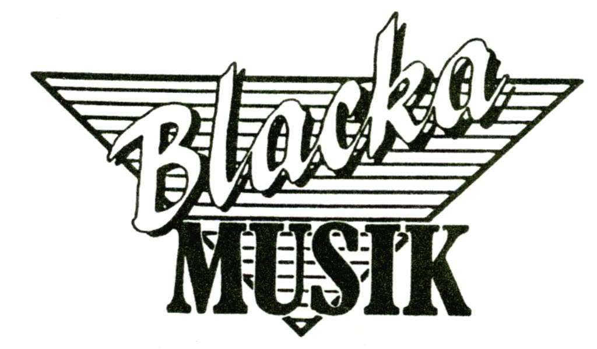

Blacka musik & Bob marleys Minneskonsert

Traditionen startade när det lokala reggaebandet Kalle Baah spontant startade en spelning mitt i ett bostadsområde för att hylla Bob Marley, som avled i cancer den 11 maj 1981, endast 36 år gammal. Bob Marley Minneskonsert i Skärblacka.
Sedan dess har minneskonserten vuxit till en endagsfestival med omkring 2000–5000 besökare, och flera av världens största reggaeband har genom åren besökt Skärblacka. Konserten hålls utanför Skärblacka Folkets Hus och är helt ideellt driven med fri entré. Kalle Baah, som startade det hela, spelar fortfarande på scenen varje år. Bland artister som medverkat finns Papa Dee, Governor Andy, Jonas Levi, Angelica Mava, Max romeo, Israel Vibration, Partiet och många mer band. Idag är evenemanget vida känt och lockar besökare och artister från stora delar av landet och även andra delar av världen.
Källa: Blacka Musik